Illustrative
IllustrativeOur work · Featured: Aughton Sample project
Watch a garden come together.
Four jobs, each shown from the same spot before, during and after, with the close-ups that show how they were built.
Sample projects with illustrative pictures, made for this demo. Not a real firm's work.
The projects Sample
Three gardens and one care home.
Mostly gardens for homes round West Lancashire, and one of the few commercial jobs we take on each year. Same standard on all four.
Domestic · Rear garden Sample project
A rear garden in Aughton
Tired lawn and broken slabs at the back of a 1930s semi, rebuilt as one garden: a porcelain patio and step, a striped lawn, deep borders and low lighting.
- House
- 1930s semi
- Town
- Aughton
- On site
- About four weeks
What they asked for
Somewhere to sit that doesn't rock or puddle, a lawn the children can use, and borders that look after themselves a bit. And light, so the garden still works after dark.
What we did
- Old patio and lawn dug out, after checking for buried services
- Sub-base compacted in layers, patio laid on a full bed with a fall to the lawn
- One wide step with lights set into the riser
- A new lawn on levelled, improved ground, edged with granite setts
- Borders planted for clay: grasses, lavender, hydrangeas and alliums
- New close-board fence down the right-hand side
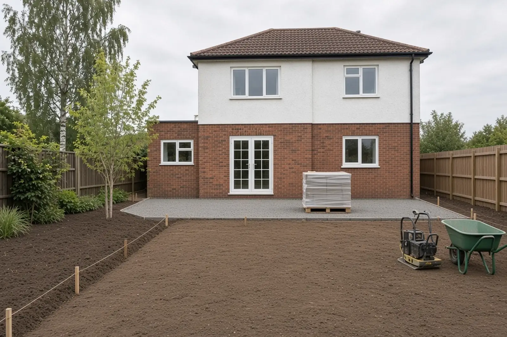
IllustrativeThe close-ups
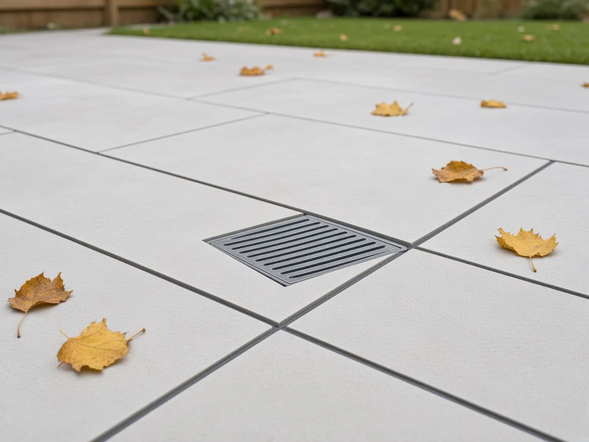
IllustrativeJoints cut round the drain cover, not a slab lifted to hide it.  Illustrative
IllustrativeSquare edge, brick riser matched to the house, lights in the riser. 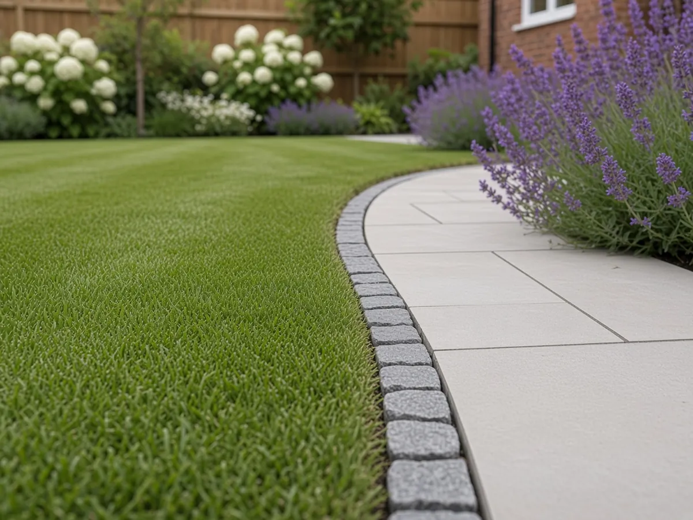
IllustrativeGranite setts as a mowing edge, so the lawn line stays crisp.
 Illustrative
IllustrativeDomestic · Front garden and drive Sample project
A front garden and drive in Ormskirk
A cracked concrete drive and a scruffy lawn in front of a 1920s semi, redesigned as one front garden: a block paved drive, a sandstone path, planting, a rebuilt wall and drainage at the gate.

- House
- 1920s semi
- Town
- Ormskirk
- On site
- About three weeks
What they asked for
Room for one car without the front of the house looking like a car park. A proper path to the door, somewhere for the bins, and no more puddle at the gate.
What we did
- Old concrete broken out and taken away
- Drive dug out, membrane down, sub-base compacted in layers
- A channel drain across the entrance, so water stays off the pavement
- Herringbone block paving with a darker border course
- A sandstone path and step to the door, with low path lights
- Front wall and pillars rebuilt in matching brick, curved bed planted, bins screened
 Illustrative
IllustrativeThe close-ups
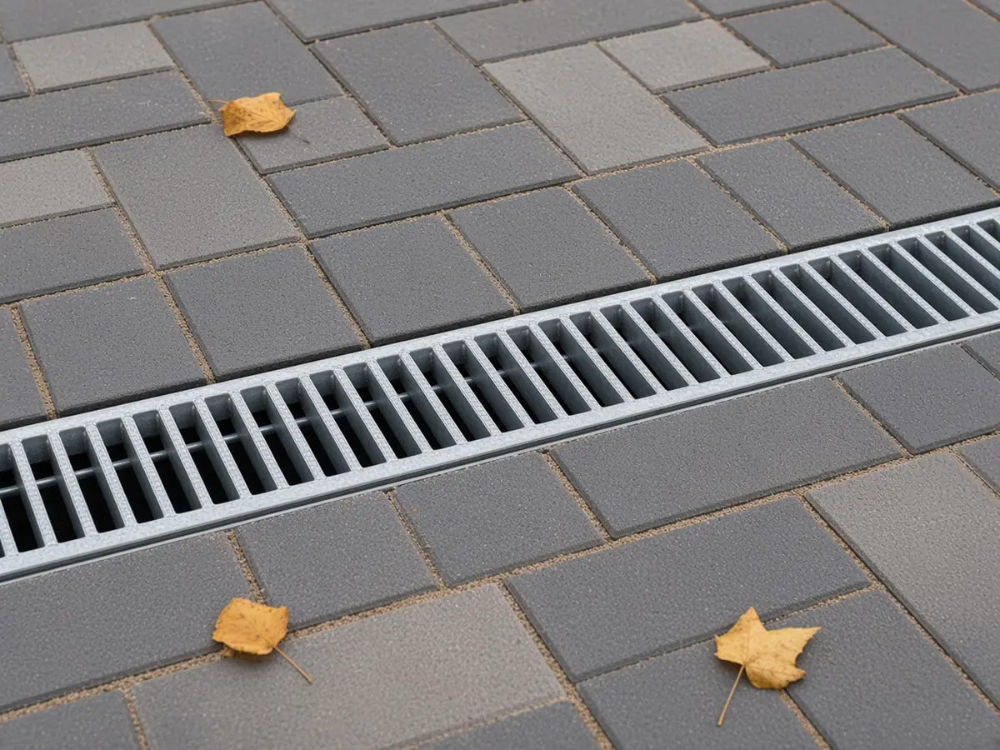
IllustrativeChannel drain set flush, blocks cut tight to it. 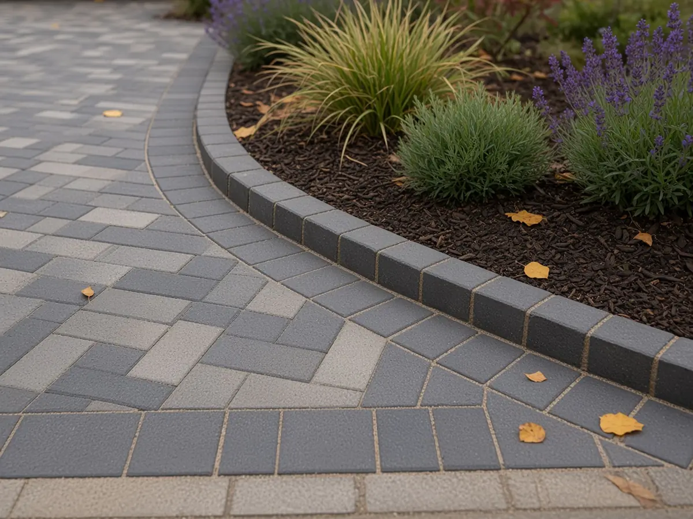
IllustrativeCut blocks tight to a straight border course. 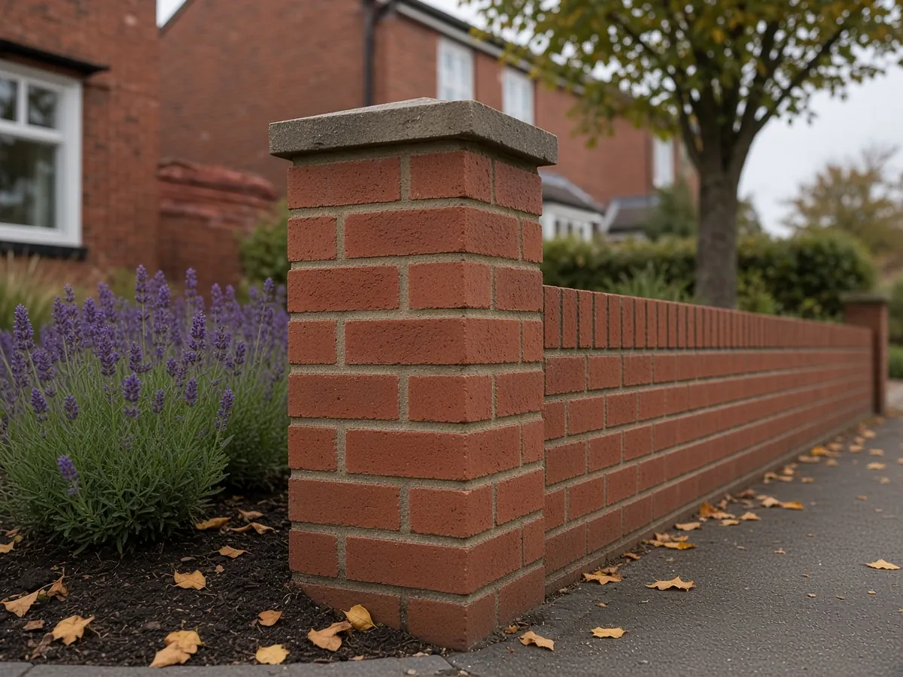
IllustrativeWall rebuilt to match the house, pointing the same all along.
Domestic · Garden room Sample project
A garden room in Burscough
A bramble-filled corner with a rotten shed at the bottom of a long garden, turned into a garden room on a level base, with a paved apron, a stepping-stone path, new fencing and planting.

- House
- 1990s detached
- Town
- Burscough
- On site
- About two weeks, plus the room going up
What they asked for
An office at the bottom of the garden that feels like part of the garden, not a box dropped on the lawn. And a dry way to get there in winter.
What we did
- Corner cleared, old shed taken away, ground levelled
- Concrete base cast level inside formwork, to the room supplier's spec
- Sandstone apron the full width of the room
- Stepping stones set flush in the lawn
- New close-board fence on concrete posts with gravel boards
- Planting round the room to settle it in: ferns, hydrangeas and grasses
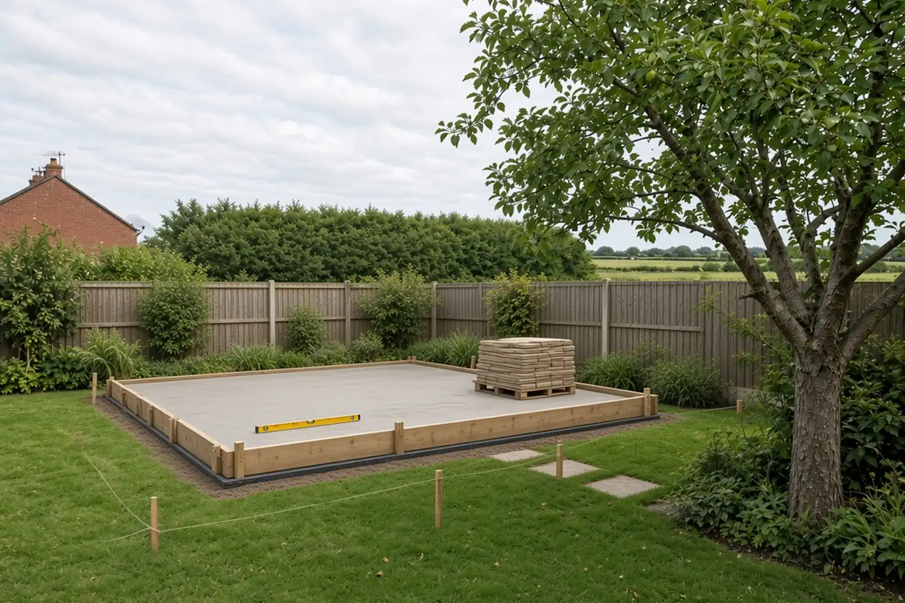
IllustrativeThe close-ups
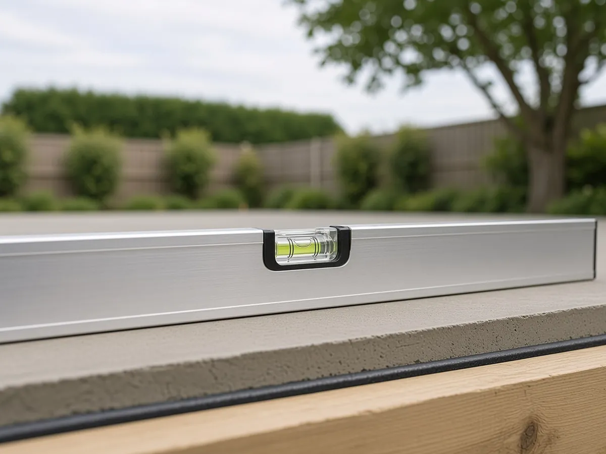
IllustrativeBase checked level before the room went on. 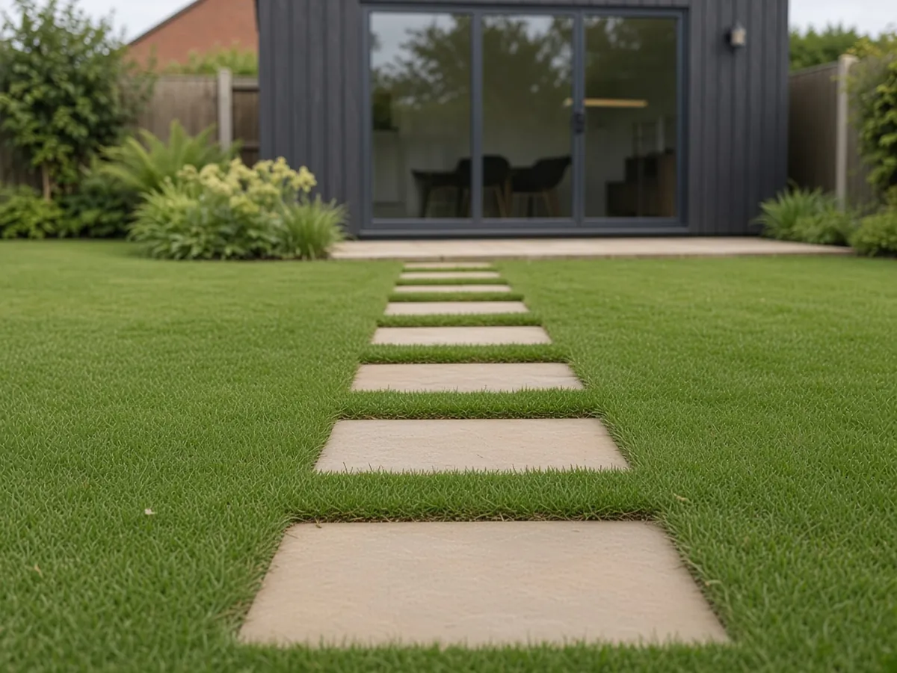
IllustrativeStepping stones flush with the lawn, so the mower runs straight over.  Illustrative
IllustrativeConcrete posts and gravel boards keep the timber off the soil.
Light commercial · Care home grounds Sample project
Care home grounds in Rufford
A worn car park and a stepped path at a small care home, rebuilt as marked visitor bays, a step-free path to the door, raised planters at seat height and new planting.

- Setting
- Small care home
- Town
- Rufford
- On site
- About five weeks, worked round the home
What they asked for
Step-free access from a car to the front door, clearer parking for visitors, and a garden residents can sit in and reach the plants from.
What we did
- Work phased so the entrance stayed open every day
- Car park dug out, kerbs set, new surface and marked bays, including a hatched accessible bay
- A gently sloping block paved path to the porch, no step anywhere
- Raised brick planters at seat height, with benches beside them
- Lawn renovated and low planting along the building
- Low bollard lights along the path
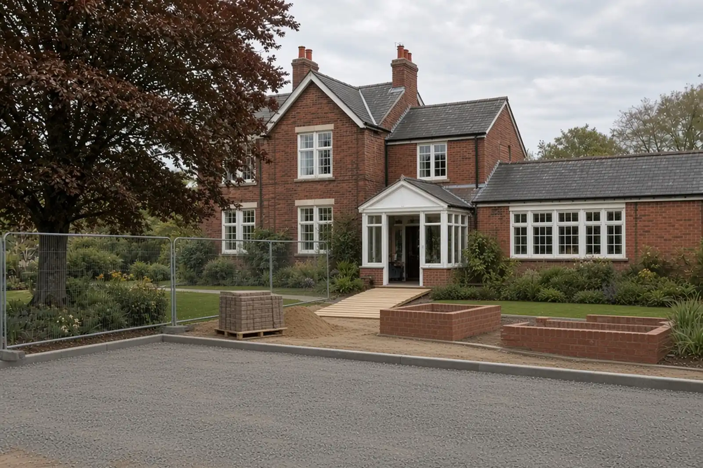
IllustrativeThe close-ups
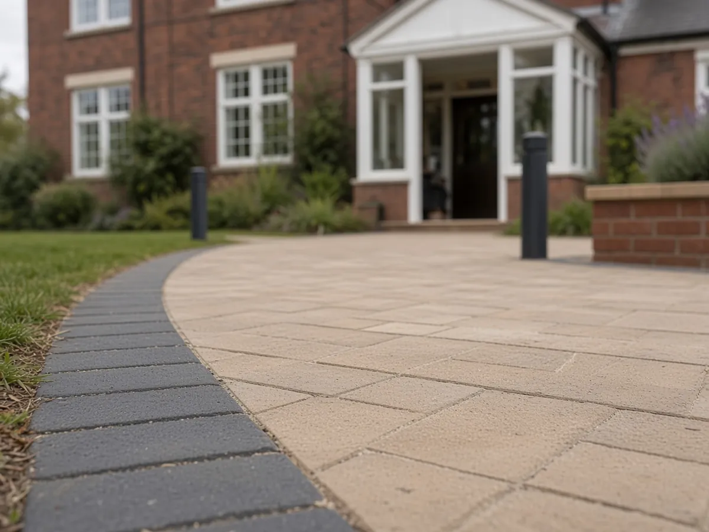
IllustrativeFlush where the slope meets the porch. No lip to catch a wheel or a foot. 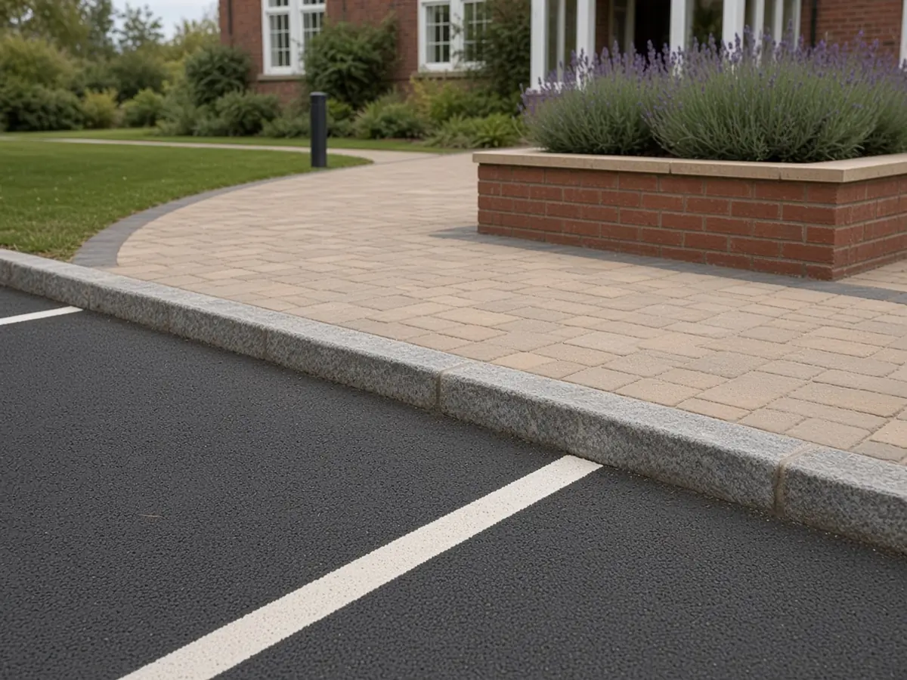
IllustrativeCrisp lines, kerbs set to a line, a smooth dropped kerb. 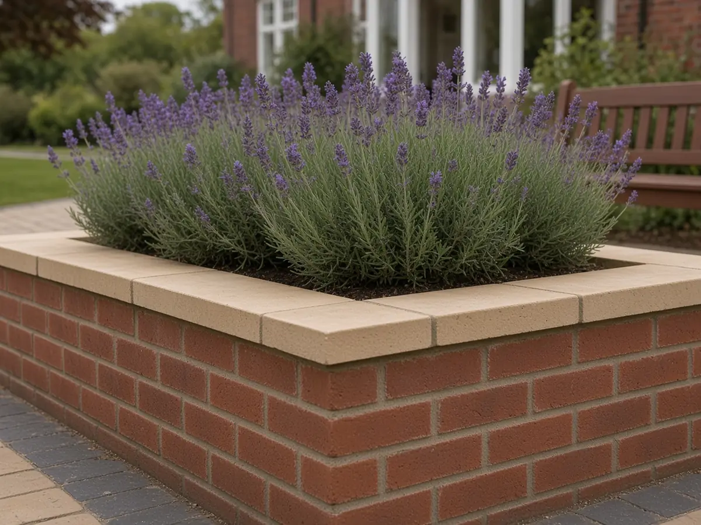
IllustrativePlanters at seat height, built to the same finish as a private garden.
The standard
The same standard on every job.
A back garden in Aughton, a front drive in Ormskirk, a care home car park in Rufford. The joints, the falls and the edges get the same attention whoever is paying and whoever is looking.
- Illustrative
Joints
Even, narrow and filled full depth. Slabs cut round covers, never lifted to hide one.
Aughton garden Sample project - Illustrative
Falls
Every hard surface falls somewhere sensible: a drain, a border, a lawn. Never the house.
Ormskirk front garden Sample project - Illustrative
Bases
Dug to depth, compacted in layers, checked level before anything goes on top.
Burscough garden room Sample project - Illustrative
Pointing
Brick matched to the house, courses straight, pointing finished the same all the way along.
Ormskirk front garden Sample project - Illustrative
Lines and edges
Kerbs set to a line and haunched so they stay put. The same on a car park as on a back garden.
Rufford care home Sample project  Stock photo
Stock photoUnder it all
The base you never see, compacted layer by layer. Most of the job is the bit that ends up buried.
And a tidy handover. Road swept, skip gone, care notes left for the planting and the paving.
Want something like this at yours?
Send a photo of the garden and roughly what you'd like. We'll come and look.
Demo number. It rings nobody.